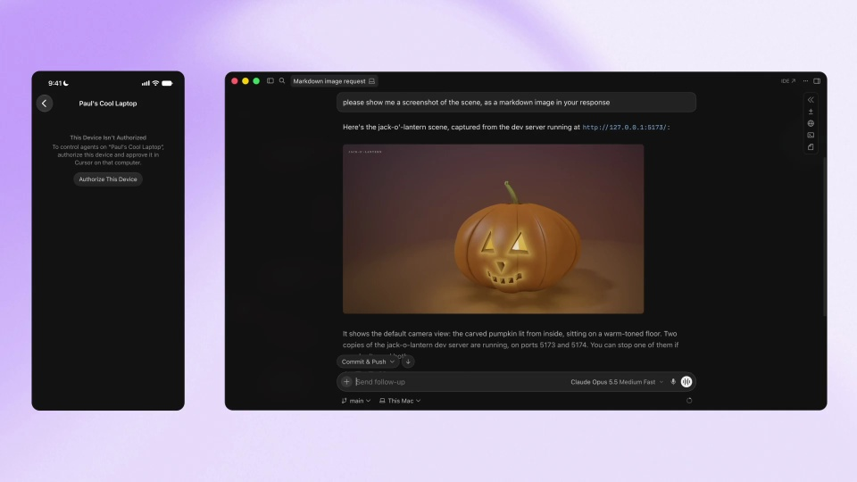
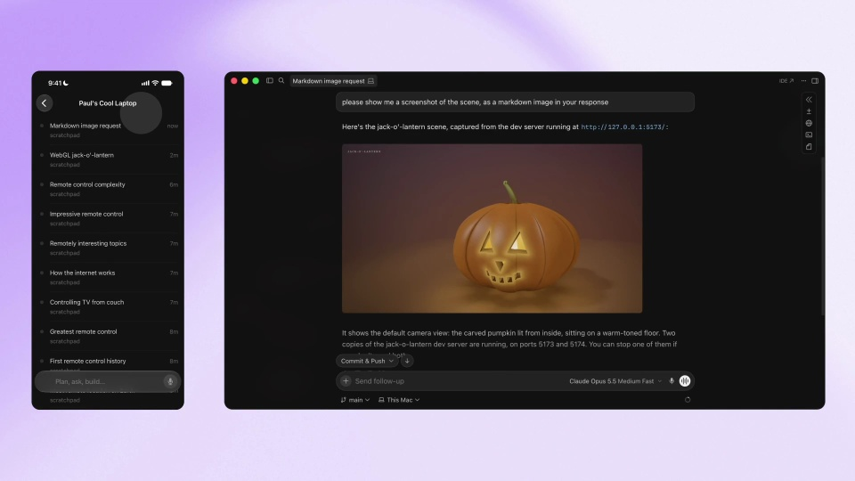
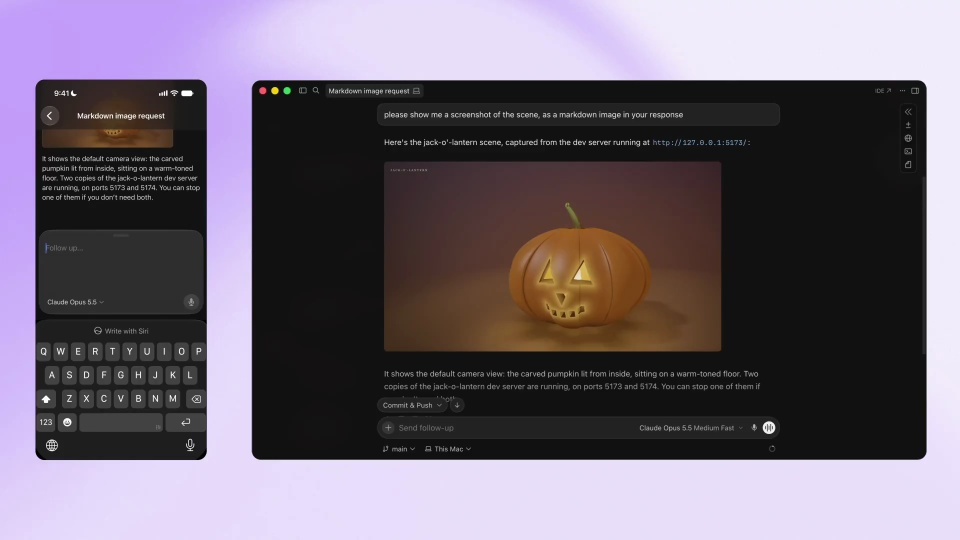
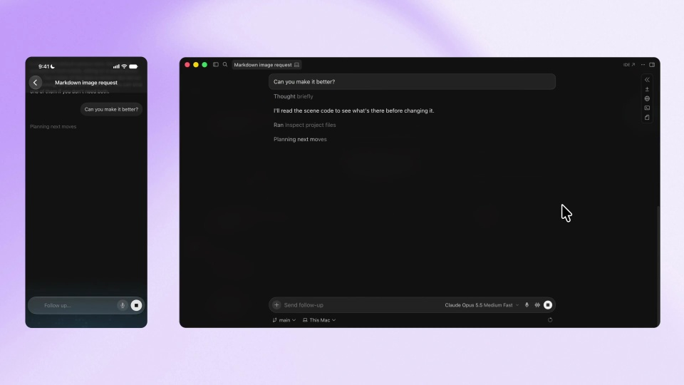
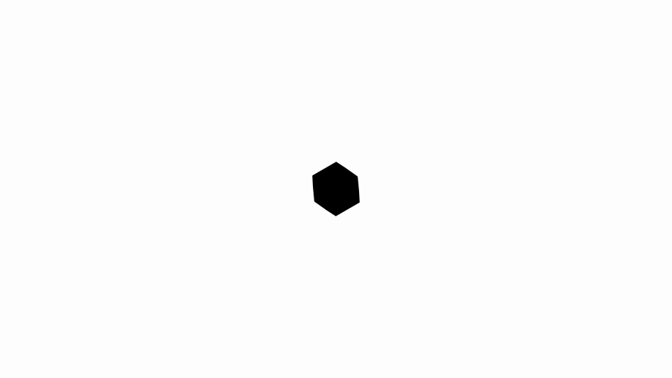

Cursor / V274
Cursor · 从手机控制电脑代理
用手机与电脑并排说明远程协作：先建立授权，再同步上下文，最后从手机发起下一项工作。
构图与编排 可播放 · 可替换内容
整体编排规则示例
查看 HTML 源码
<!doctype html><html lang="zh-CN"><meta charset="utf-8"><meta name="viewport" content="width=device-width,initial-scale=1"><title>You can now control agents on your computer from your phone.
Check in, reply, or start new tasks from the Cursor iOS ap · sequence</title><style>html,body{margin:0;width:100%;height:100%;overflow:hidden;background:#f5f5f1}canvas{display:block;width:100%;height:100%;object-fit:contain}</style><body data-mode="sequence"><canvas width="1000" height="600"></canvas><script src="data.js"></script><script src="common.js"></script><script src="scene.js"></script><script src="bridge.js"></script></body></html>画面元素手机聊天电脑代理授权框配对状态共享图片追问键盘
MOTION LANGUAGE
动作与构图
局部动作 · 构图规则
01
先配对，再共享内容
手机和电脑分别占据稳定位置，授权框出现在电脑端或明确的接收端。确认后显示连接状态，再让同一条消息和图片出现在两边。
紫色外围承托深色双端界面，重要文字用浅色无衬线。手机更窄，只保留当前上下文；电脑更宽，展示执行与成果。
02
同步靠相同内容，不靠两边乱动
同步靠相同内容，不靠两边乱动规则示例
查看 HTML 源码
<!doctype html><html lang="zh-CN"><meta charset="utf-8"><meta name="viewport" content="width=device-width,initial-scale=1"><title>You can now control agents on your computer from your phone.
Check in, reply, or start new tasks from the Cursor iOS ap · sequence</title><style>html,body{margin:0;width:100%;height:100%;overflow:hidden;background:#f5f5f1}canvas{display:block;width:100%;height:100%;object-fit:contain}</style><body data-mode="clip" data-start="14" data-end="21"><canvas width="1000" height="600"></canvas><script src="data.js"></script><script src="common.js"></script><script src="scene.js"></script><script src="bridge.js"></script></body></html>结果图片在电脑端出现后，再进入手机端。名称、内容和任务标题保持一致，滚动只服务当前阅读对象，不要求两边同时以同样速度滚动。
03
从手机发出的追问，电脑来处理
手机键盘或输入框出现，发送追问后电脑进入处理状态，结果更新再回到两端。用这一轮方向明确的往返结束演示。
换场景时可替换成果为设计图、报告或代码结果，保留授权、共享上下文和远程发起三种关系。
SEQUENCE
段落与节奏
点击段落，定位到上方编排示意。






画面参考 · 离散静帧
KEEP THE RELATIONSHIPS
制作其他主题
- 迁移到远程控制场景时保留授权→共享上下文→远程发起→反馈
- 两端角色和消息身份保持一致，品牌内容可换
制作约束
手机聊天 / 电脑代理 / 授权框 / 配对状态 / 共享图片 / 追问 / 键盘
- 先授权配对，随后同一消息和结果出现在两端
- 手机输入发出后电脑开始执行，最后双方更新，方向明确
- 图像出现顺序说明同步关系，不需要每帧同步滚动